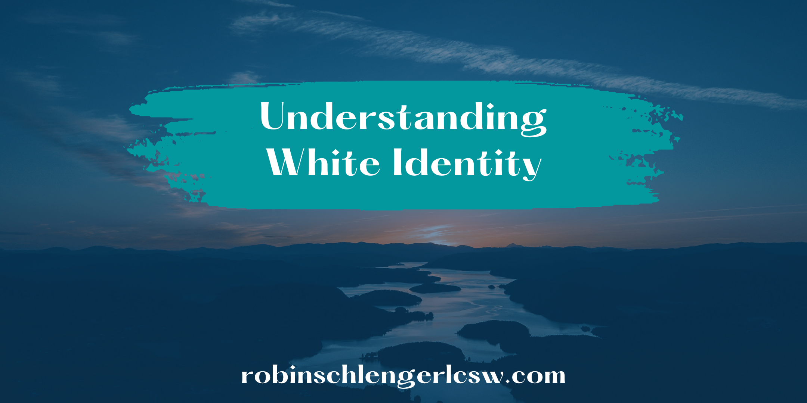
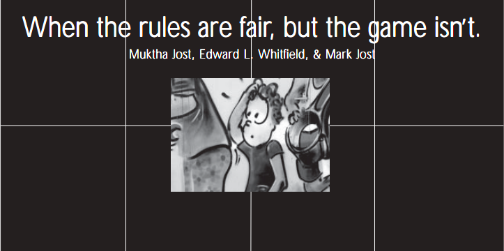
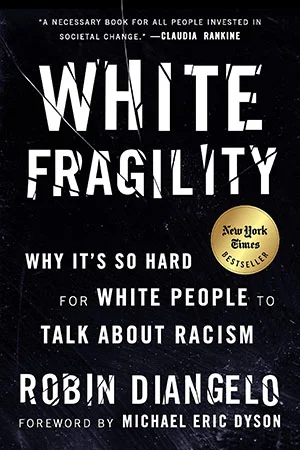
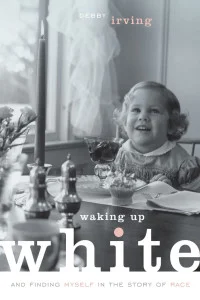
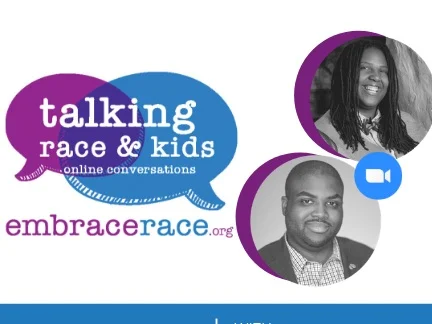
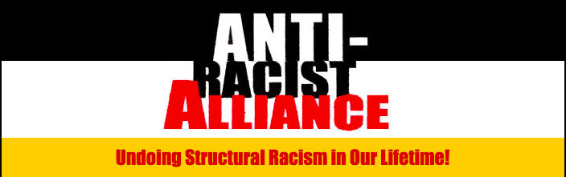

2019-04-03
Understanding White Identity

My thanks and appreciation to all the folks that have read and commented on my first blog. A special thank you goes out to those of you who were generous enough to share some resources that were helpful to you. I would love nothing more than to co-create a community of white anti-racists supporting each other on the journey to dismantle racism.
This month I am sharing some resources that focus on Whiteness (white identity development and white culture). I believe that in order for those of us who have come to be called white to be able to understand racism, we must first develop a deeper understanding of what it means to be white in this country.
I am still trying to come to terms with my own white racial identity. I have good days and bad ones and many more in between as I continue to educate myself, build authentic relationships with People of Color and dig deep into my soul.
This is hard work and it is LIFE WORK and it MUST be done if we want to restore our humanity.
Here are some more resources to support you on your journey. Click on the image to be taken directly to the resource.

I read this article right after I attended my first Undoing Racism and Community Organizing Workshop. People that know me will tell you that I love metaphors as a way of learning and teaching. What I like most about this article is that it uses a familiar metaphor (a game) to explain unearned advantage and systemic inequity. This article really made me look at some of the ways in which I have internalized a racially biased concept of meritocracy and how it’s manifested in my work with clients, especially, my work with clients of color. That was really difficult to sit with yet the awareness is helping me change and grow.

This book was difficult to read the first time. It was really uncomfortable to think about the ways that shame and guilt have prevented me from being able to have authentic conversations about race, especially with People of Color. I am learning to sit through the discomfort and to get past the shame that has gotten in the way. This is a crucial book to read if you are ready to take responsibility for the harm we cause people of color by our silence, denial, rage and flight.

Debbie Irving’s words resonate so deeply with me because I have experienced so much of what she speaks about. What makes this book so powerful for me is the honesty in which the author shares her journey through “embarrassment and shame” as she unpacks her experience of what it means to be white and grapples with the realization that she has been looking at the world through a distorted lens. She really hits home for me when talks about finding out that she actually had a race.
Here are two of Robin DiAngelo’s many YouTube Videos:
Embedded media (requires internet): //www.youtube.com/embed/wjHg65JORi8?wmode=opaque&enablejsapi=1
This short video speaks to all of us white folks who have said “I can’t be racist, I’m a good person,” or “I’m a liberal,” or “I have friends who are black.” I really respect the way she breaks it down with clarity and precision. I go back to this video when I find myself being pulled astray by the call of the “White lullaby”. This is a great video to share with family, friends and colleagues.
Embedded media (requires internet): //www.youtube.com/embed/ktVaZVVgJyc?wmode=opaque&enablejsapi=1
I have watched and shown this video countless times. If you have read White Fragility, this video will highlight the authors work. It helped me, by reinforcing what I learned in the book and strengthening my understanding. Actually seeing Robin DiAngelo speak made her work so much more alive and personal for me.
Websites and Additional Resources

I only recently found this website while I was looking for some resources for a friend who was looking for some tips about how to talk to her eight year old about race. This website offers tips sheets for parents as well as books, videos and much more. I am still exploring all that this organization offers and would love to hear feedback from folks about their experiences with it.

(See the antiracist alliance website for workshops in the NYC area) https://www.pisab.org/
It is difficult to dismantle a lifetime of beliefs. I know, because I’m still trying to do it, 5 years into waking up and having the blindfolds removed . I hope that these resources will help you to begin your own journey, one that is well worth the effort. To go deeper, definitely check out the Undoing Racism and Community Organizing workshop at The People’s Institute of Survival and Beyond.
This workshop CHANGED MY LIFE FOREVER
Please reach out if you have any questions or suggestions